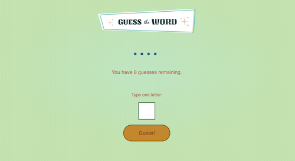

Welcome
Hunter Gouldthorpe
Developer | Designer | Performer
I'm a Front End Web Developer in Salisbury, Massachusetts that enjoys creating
visually appealing web pages!
Projects
Stuff I'm pretty proud of -
Guess the Word Game

An interactive game built with JavaScript that allows the user to make guesses to discover the hidden mystery word!
Correctly guessed letters will display on the hidden word in real time. After all 8 chances are used, the user has the option to
begin a new game, and the game restarts with a brand new randomly fetched word. Play as many times as you like!
About Me
I began my interest in software engineering after finding myself wanting to take
the reins of my professional career and challenge myself to upgrade my professional skills.
I believe my background in theatre and performing arts makes me a good candidate for employers looking
for someone with strong collaboration skills, communication with team members and a willingness to
quickly learn new and relevent skills. When I'm not at the computer, one can normally find me outside in the garden,
reading a good book with a cup of matcha, or hanging out with my dog!